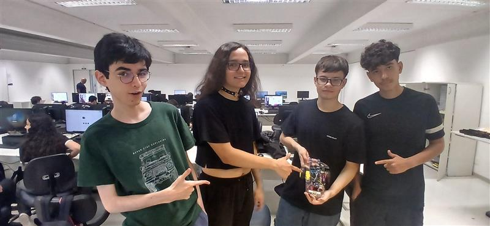
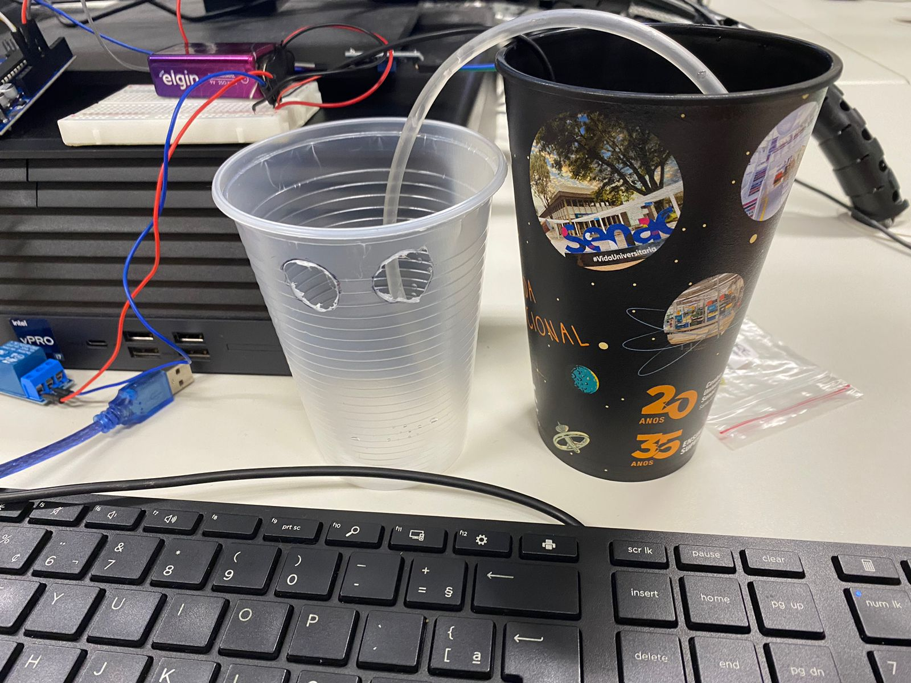
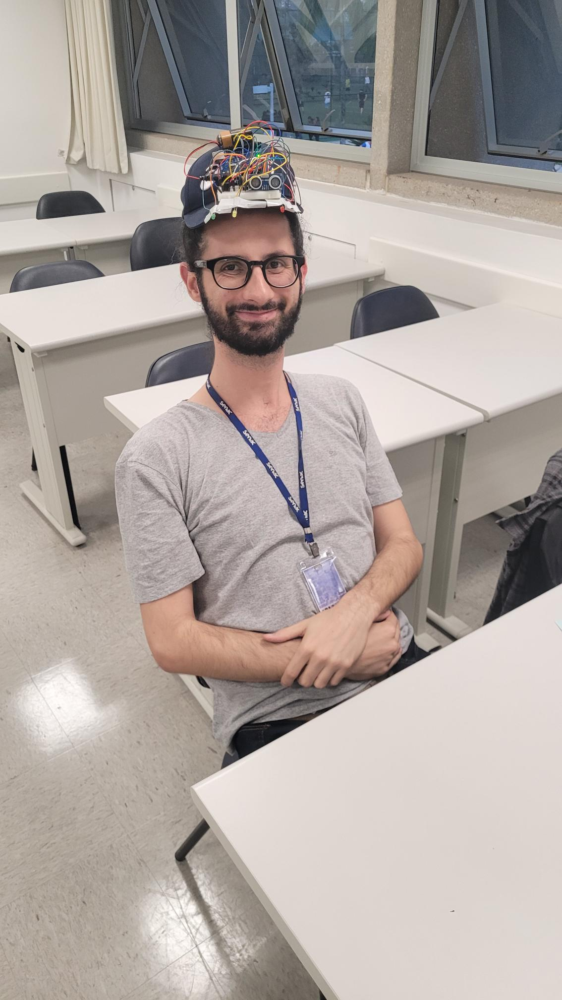

Internet das Coisas
O que é?
A Internet das Coisas (IoT) é um conceito que se refere à interconexão digital de objetos físicos com a internet, permitindo que dispositivos se comuniquem entre si e com usuários, facilitando a automação e o controle remoto.
Atividade Favorita
Minha atividade favorita de Internet das Coisas foi a lixeira automática, onde aprendi a automatizar o funcionamento de uma lixeira, utilizando sensores ultrassônicos e Arduino para abrir a tampa quando uma pessoa se aproxima.
Professor e Matéria
Professor: Glauco | Matéria: Internet das Coisas
Imagem da Internet das Coisas

Acima é uma foto mostrando o projeto de Internet das Coisas um carrinho segue Linha que realizei com meus colegas de turma.
Vídeo sobre Internet das Coisas
Veja esse vídeo para entender melhor como a Internet das Coisas está transformando o mundo.
Link do VídeoIrrigador Automático

Nesse projeto, realizamos a construção de um irrigador automático utilizando sensores de umidade e Arduino. O sistema liga automaticamente a água para irrigar plantas quando o solo está seco.
Lixeira Automática
Veja o funcionamento da lixeira automática que abre sua tampa ao detectar a aproximação de uma pessoa. Utilizamos sensores ultrassônicos e Arduino para automatizar a lixeira.
Boné Inteligente

Neste projeto, desenvolvemos um boné inteligente com um sensor de ré, projetado para ajudar pessoas com problemas de visão. O boné é capaz de detectar obstáculos atrás do usuário e emitir alertas, ajudando a evitar colisões e proporcionando maior segurança no deslocamento.